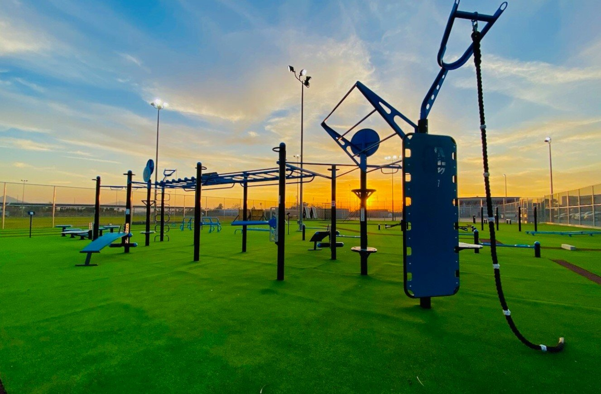
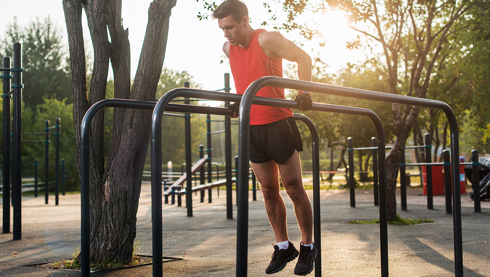

Street Workout
Workout na drążkach, znany również jako street workout, to rodzaj aktywności fizycznej, który łączy elementy treningu siłowego, gimnastyki oraz akrobatyki na sprzętach ulicznych, takich jak drążki czy poręcze. Głównym celem jest wykorzystanie masy własnego ciała do wykonywania różnych ćwiczeń, które rozwijają siłę, wytrzymałość, koordynację oraz elastyczność.
Street Workout ma swoje początki w starożytnej Grecji, ale na stałe zakorzenił się w XXI wieku w Europie Wschodniej, Rosji i Stanach Zjednoczonych. W szczególności zaczął się rozwijać w Nowym Jorku na obszarach dotkniętych ubóstwem, ponieważ ludzie nie mogli sobie pozwolić na chodzenie na siłownie. Zamiast tego wykorzystali otoczenie, w tym place zabaw i ławki, aby poćwiczyć.  To świetna forma treningu, która może być treningiem samym w sobie lub wspomagać inne sporty. Jego wszechstronność pomaga również w osiągnięciu umiejętności fizycznych, które nie są specyficzne dla żadnego pojedynczego sportu. Uniwersalny charakter tego sportu sprawia, że nie jest tu ważna płeć – sprawdzi się zarówno u kobiet jak i u mężczyzn. Niektóre ruchy specjalizują się w bardziej akrobatycznej odsłonie, wymagającej wysokich umiejętności motorycznych, podczas gdy inne skupiają się na podstawowych ruchach i pracują nad siłą mięśni. Trening oporowy – gdy jest wykonywany nieprawidłowo, ze zbyt dużymi ciężarami, zbyt często lub w nieodpowiedni sposób może dodatkowo obciążyć struktury tkanek miękkich, takie jak ścięgna, więzadła i powięź. Z drugiej strony, kalistenika rozwija siłę i rozmiar mięśni proporcjonalnie do układu mięśniowego, wykonując naturalne ruchy. Trening kalisteniczny rozwija te umiejętności motoryczne, które wymagają od mózgu ciężkiej pracy. Tworzą się połączenia ciało-mózg. Koordynacja, szybkość, moc, przyspieszenie, siła i zwinność to wszystkie cechy motoryczne, które ćwiczy ciało podczas takiego treningu. Ten trening rozwija siłę, mobilność, równowagę i koordynację oraz ogólną sprawność fizyczną. Zasadniczo każdy plac zabaw może posłużyć jako odpowiednie miejsce do treningu ale sprzęt, który został zaprojektowany we współpracy ze Street Workoutowcami sprawia, że trening jest bardziej satysfakcjonujący i może nas bardziej rozwinąć. Sport jest niedrogi: potrzebujemy tylko butów, koszulki i spodni dresowych czy legginsów. No i przede wszystkim chęci! 😉  Street workout to forma ćwiczeń łącząca elementy gimnastyki i parkouru. Ten trening jest odpowiedni dla prawie każdego i można go wykonywać niemal wszędzie. Można trenować z wykorzystaniem własnej masy ciała lub z pomocą różnych przedmiotów takich jak ławki czy drążki. Kluczowymi elementami w Street Workout są: pompki, stanie na rękach, podciągnięcia, zwisy oraz różne ich kombinacje. Wyobraźnia odgrywa największą rolę w Street Workoucie, ponieważ entuzjaści wymyślają coraz to bardziej pomysłowe i wymagające sekwencje, jakie można sobie wyobrazić. Street Workout jest również przyjemny do oglądania i jest w stanie przekazać dużo emocji widzom.
Uprawiają ją sportowcy z całego globu, jednak nie będzie żadną przesadą, gdy stwierdzimy, że najwiekszą popularność zyskała we wschodnich krajach Europy.
Bardziej zaawansowanych entuzjastów tego sportu z pewnością zainteresują wydarzenia, w których mogą rywalizować z innymi zawodnikami. Odbywają się one zarówno na arenie krajowej, jak i międzynarodowej. W Polsce organizuje je m.oin. Polski Związek Kalisteniki i Street Workoutu.
Jak zacząć?
-
Ćwiczenia dla początkujących
- Push-Up – pompka: działa na klatkę piersiową, triceps i ramiona, wzmacniając jednocześnie cały core.
- Plank – deska: buduje stabilność i siłę w całym centrum, czyli wzmacnia cały core oraz prostowniki pleców czy ramiona.
- Lounge – wykrok: buduje siłę i mobilność w dolnej części ciała.
- Burpee – padnij powstań – jest przydatne do ćwiczeń, a także wzmacnia układ krwionośny oraz oddechowy. Osoby bardzo początkujące mogą spróbować pół burpee: bez pompek, bez skoku.
-
Zaawansowane ćwiczenia:
- L-Sit: ten ruch pochodzi z gimnastyki i jest świetny do budowania stabilności w barkach oraz wytrzymałości górnej części ciała.
- Pull-Up: działa na plecy i biceps, jednocześnie wzmacniając kręgosłup.
- Burpee – padnij powstań – tak jak wcześniej, jednak można spróbować robić go w różnych kombinacjach, na przykład z wysokim podskokiem czy pompką.
- Pistol squat – przysiad na jednej nodze- ten ruch na początku na pewno będzie stanowić wyzwanie, szczególnie jeżeli chodzi o utrzymanie równowagi czy mobilności. Świetnie działa na dolną część ciała oraz poprawia siłę w nogach.